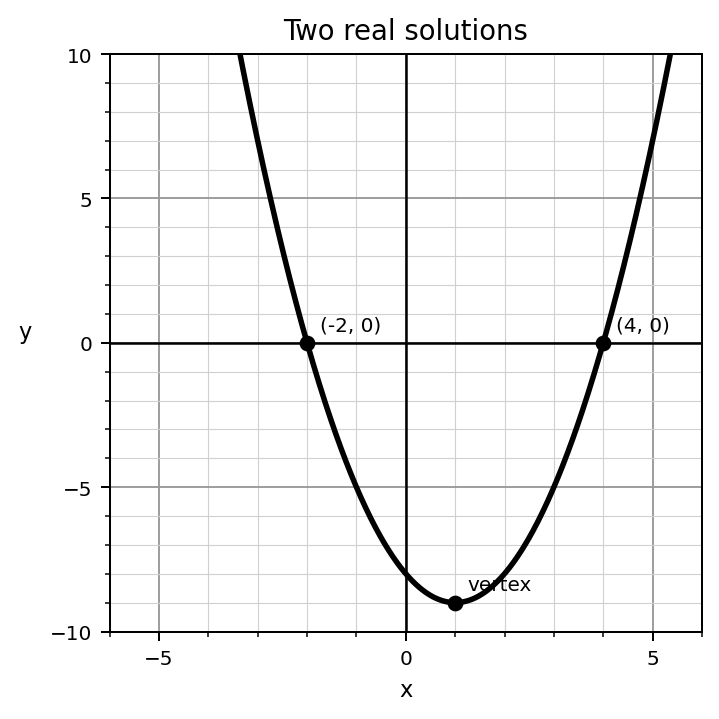
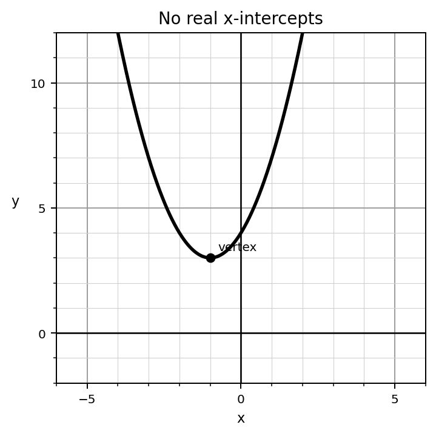
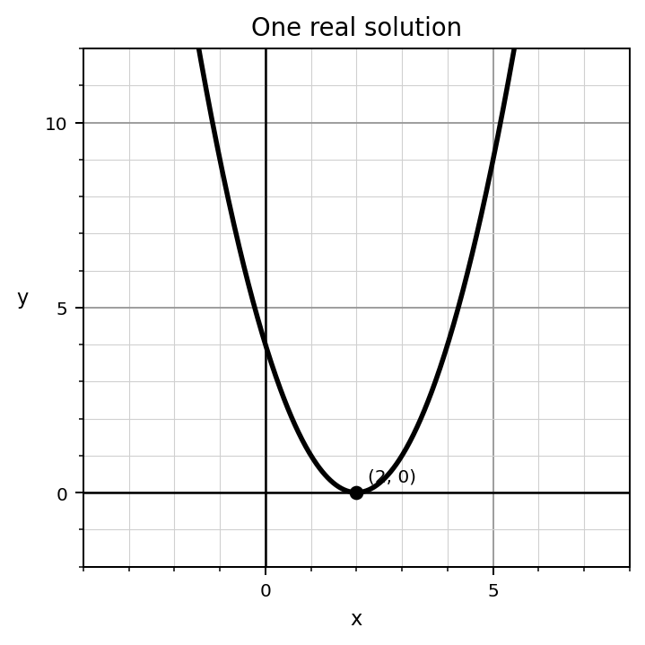
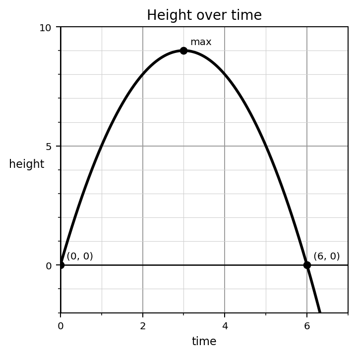
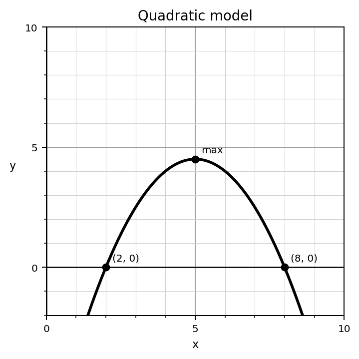

Students will solve, analyze, and model quadratic relationships in order to interpret solutions, compare representations, and make decisions using equations, graphs, tables, and contexts.
| Rung | I Can Statement | DOK | Level |
|---|---|---|---|
| 8 | I can create and analyze quadratic models, interpret solutions and key features in context, and justify conclusions using equations, graphs, tables, and constraints. | DOK 4 | Above |
| 7 | I can compare and critique multiple solution methods or models, revise reasoning, and defend which approach is most appropriate for a given quadratic situation. | DOK 4 | Above |
| 6 | I can analyze quadratic equations and graphs to explain why a solution method works and how algebraic solutions connect to graph features. | DOK 3 | Essential |
| 5 | I can justify solution choices, verify solutions, interpret roots and vertices, and critique errors in quadratic reasoning. | DOK 3 | Essential |
| 4 | I can solve quadratic equations using completing the square or the quadratic formula and connect solutions to graphs or contexts. | DOK 2 | Essential |
| 3 | I can solve quadratic equations by factoring, apply the Zero Product Property, and identify solutions from factored forms and graphs. | DOK 2 | Essential |
| 2 | I can identify vocabulary, notation, and features for roots, zeros, intercepts, vertices, discriminants, and quadratic models. | DOK 1 | Essential |
| 1 | I can recognize quadratic equations, graphs, tables, and contextual models as different representations of the same type of relationship. | DOK 1 | Essential |
Format: 3–5 minute warm-up, vocabulary check, graph-feature check, formula identification, or exit ticket
Purpose: Check whether students can recall vocabulary, identify equation and graph features, recognize solution types, and set up solving methods before completing full procedures.
Which equation is ready for the Zero Product Property?
For $(x-5)(x+3)=0$, list the two factors.
Use the graph. How many $x$-intercepts are visible?

Complete the statement: A zero of a quadratic function appears on the graph as an __________.
In $x^2+10x+□$, identify the term that would be added to complete the square.
For $2x^2-5x+3=0$, identify $a$, $b$, and $c$.
Write the discriminant expression for $ax^2+bx+c=0$.
Use the graph. Does the quadratic appear to have one, two, or no real solutions?

Format: Exit ticket, mini-quiz, graph/equation task, method-practice task, partner check, or short written task
Purpose: Check whether students can execute quadratic solution methods and interpret routine graph or model information.
Solve by factoring.
$$x^2-5x+6=0$$
Solve using the Zero Product Property.
$$(x+4)(x-1)=0$$
Rewrite $x^2+3x=10$ so one side equals zero, then solve by factoring.
Complete the square to rewrite the expression.
$$x^2+8x+□$$
Solve by completing the square.
$$x^2+6x-7=0$$
Use the quadratic formula to solve.
$$x^2-4x-5=0$$
Use the discriminant to determine the number of real solutions.
$$x^2+2x+5=0$$
Use the graph to estimate the solutions. Then explain how the intercepts relate to solving the equation.
Format: Constructed response, strategy comparison, error analysis, model interpretation, or discourse prompt
Purpose: Check whether students can explain why methods work, critique mistakes, compare strategies, and connect solutions, vertices, and intercepts across representations.
A student solves $(x-4)(x+2)=6$ by saying $x=4$ or $x=-2$.
Explain the error and correct the process.
Explain why the Zero Product Property can be used for $(x-3)(x+5)=0$ but not directly for $(x-3)(x+5)=12$.
Solve $x^2+2x-15=0$ and explain how each solution appears on the graph of $y=x^2+2x-15$.
Use the graph to justify whether the equation has one, two, or no real solutions.

A student rewrites $x^2+6x+5$ as $(x+6)^2+5$.
Analyze the error and correct the rewrite.
Compare solving $x^2-25=0$ by factoring and by square roots. Which is clearer and why?
Choose the most efficient method for solving each equation and justify your choice.
| $x^2-9=0$ |
| $x^2+6x+2=0$ |
| $3x^2-2x-7=0$ |
A height model has roots at $0$ and $6$ and a maximum at about $9$.
Explain what each feature means in context.

Format: Brief performance task, modeling task, critique-and-revise task, design task, or decision-making task
Purpose: Check whether students can transfer quadratic-solving tools to unfamiliar situations, select appropriate methods, build models, and justify decisions.
Create a quadratic equation that can be solved by factoring and has two integer solutions. Solve it and explain how you designed it.
Design a flawed Zero Product Property solution. Then write feedback that would help a student revise the reasoning.
Create one quadratic equation that is best solved by factoring and one that is better solved using the quadratic formula. Justify both choices.
Create a quadratic model with a chosen vertex. Write it in vertex form, then describe what the vertex means.
Use the projectile graph to write and interpret a possible model. Include what the roots and maximum represent.
Create a real-world problem where one quadratic solution is reasonable and the other is not. Explain why the unreasonable solution should be rejected.
Critique this claim:
The quadratic formula is always the best method because it works every time.
Use examples to explain when another method may be better.
Use the model graph to make a recommendation or decision. Explain which features of the graph support your conclusion.
